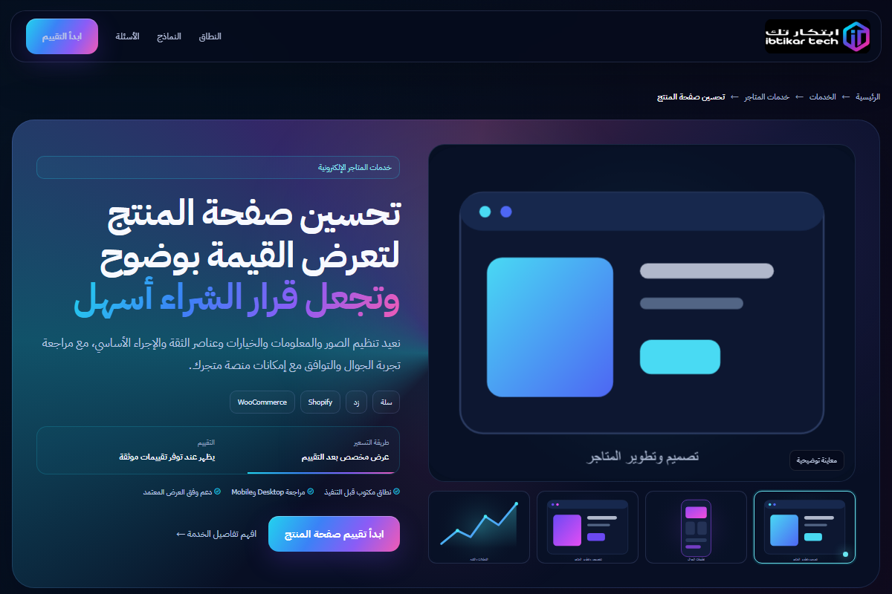

إطلاق متجر جديد
هيكل وهوية وتجربة ومنصة وربط واختبار قبل الإطلاق.
خطط لإطلاق متجرك ←نبني أو نطوّر تجربة التجارة حول رحلة العميل: اكتشاف المنتج، فهم القيمة، الثقة، قرار الشراء، ثم القياس والتحسين.

المتجر الجديد لا يحتاج نفس مسار متجر قائم يعاني من صفحة منتج ضعيفة.
هيكل وهوية وتجربة ومنصة وربط واختبار قبل الإطلاق.
خطط لإطلاق متجرك ←تشخيص الرحلة والجوال والمحتوى والأداء ثم تحسينات مرتبة.
اطلب مراجعة المتجر ←ترتيب الصور والمعلومات والخيارات والثقة والإجراء الأساسي.
استكشف الخدمة ←تهيئة SEO والتحليلات والكتالوجات وصفحات الحملات.
استكشف مسار النمو ←لا توجد منصة أفضل للجميع؛ توجد منصة أنسب للنطاق والعمليات والسوق.
إطلاق سريع للسوق المحلي مع تخصيص الثيم وتجربة الشراء.
حلول سلةتجارة محلية مع احتياجات تشغيل وربط وتجربة علامة.
حلول زدمرونة WordPress وتخصيص أوسع للمحتوى والتكاملات.
حلول WooCommerceتجربة تجارة قابلة للتوسع مع منظومة تطبيقات عالمية.
حلول Shopifyنبني ترتيبًا يجيب عن أسئلة العميل قبل أن يسأل: ماذا سأحصل؟ لماذا أثق؟ أي خيار يناسبني؟ وما الخطوة التالية؟

المنتجات والقرار والاعتراضات والعمليات والمنصة.
التصنيفات والبحث والصفحات وسيناريوهات الجوال.
واجهة العلامة ومكونات المنصة والربط المطلوب.
الشراء والدفع والشحن والسرعة والأحداث الأساسية.
قراءة السلوك وتحديد الخطوة التالية حسب البيانات.
أهداف ونطاق وخريطة صفحات وتصنيفات.
واجهة متجاوبة وتخصيص مناسب لإمكانات المنصة.
قوالب معلومات وأولويات عرض وتسليم منظم.
أدوات وتحليلات وأحداث وفق الصلاحيات المتاحة.
مراجعة التحميل والتفاعل وإعادة التدفق.
سيناريوهات رئيسية وملاحظات ودعم محدد.
نعم وفق إمكانات كل منصة ونطاق التخصيص. نوضح قبل التنفيذ ما يمكن عمله مباشرة وما يحتاج تطبيقًا أو تطويرًا خاصًا.
يتحدد العدد وقالب البيانات ومسؤولية الصور والوصف ضمن العرض، ولا نفترض إدخالًا غير محدود.
لا نقدم ضمانًا غير واقعي. نحسن وضوح التجربة والقياس ونقاط الاحتكاك، بينما تتأثر النتائج أيضًا بالمنتج والسعر والتشغيل والتسويق.
أرسل المنصة والرابط والهدف وسنحدد أفضل نقطة بداية.